Install Sample Application on Tenant Cluster
In this section, you will be installing basic Node.js application on Tenant cluster. You will also be testing the high availability and resilience of deployed Node.js application.

Prerequisites
-
Ensure OpenShift Data Foundation operator is installed.
-
Ensure Image Registry operator is using
Noobaastorage with Red Hat OpenShift Data Foundation.Sample output:[root@hypervisor ~]# oc get co image-registry NAME VERSION AVAILABLE PROGRESSING DEGRADED SINCE MESSAGE image-registry 4.16.8 True False False 61s
Install Node.js application on Tenant cluster
-
From the left navigation pane, click .
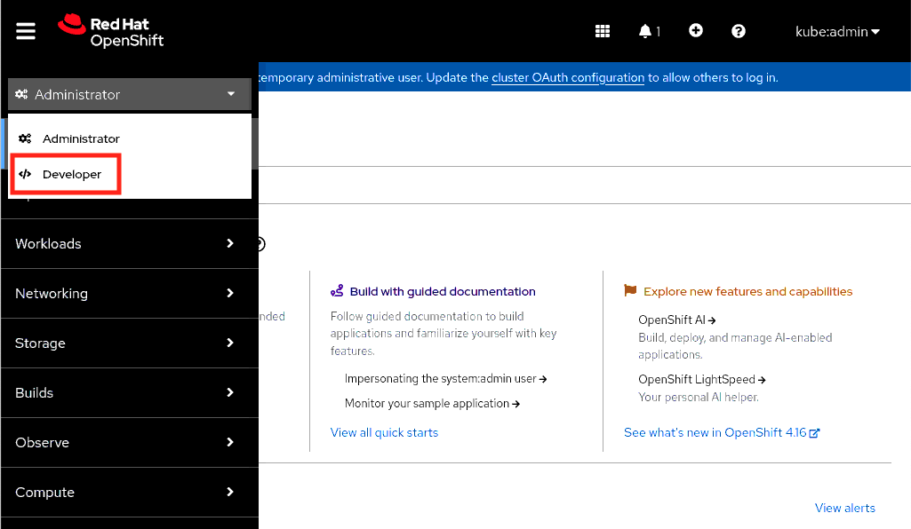 -
You will be redirected to developer view.
Click on text create a Project.
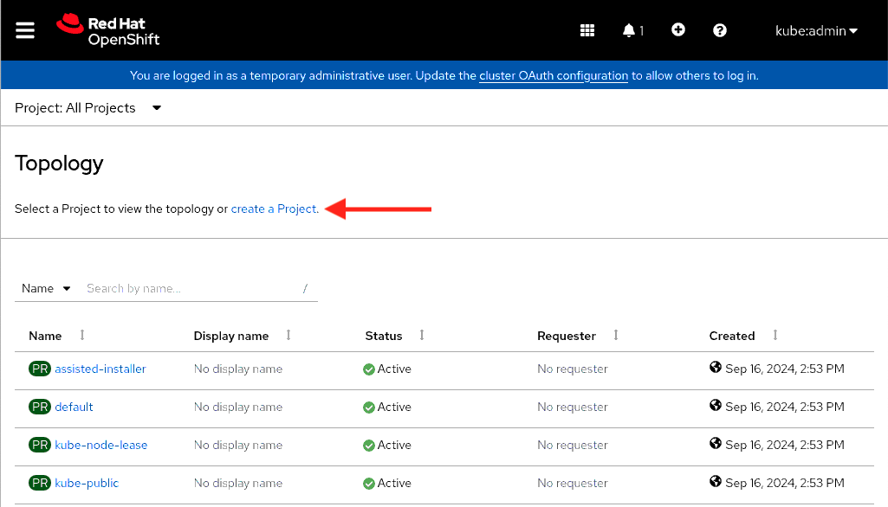 -
In the create project window, provide the project details.
Name:
sample.Display name:
sample.Description:
This is sample project.Click Create to create the project.
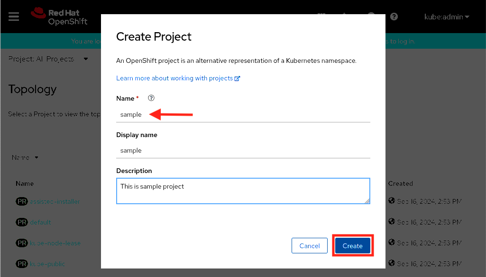 -
In the project view, to add the sample application click on text Add page.
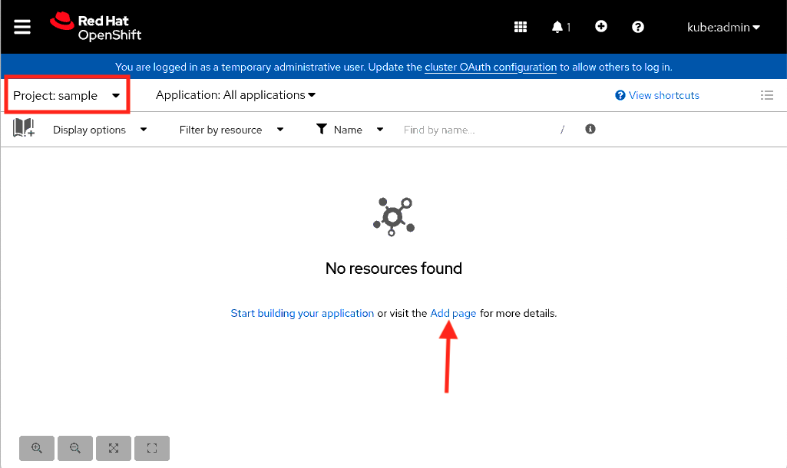 -
In the add page window, click on text View all samples.
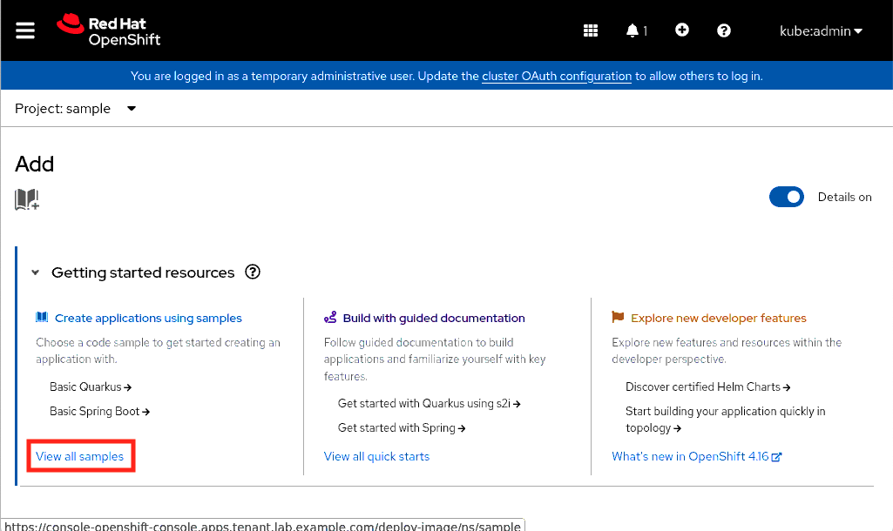 -
In the search section, search for
basic node.Select the
Basic Node.jsapplication from samples.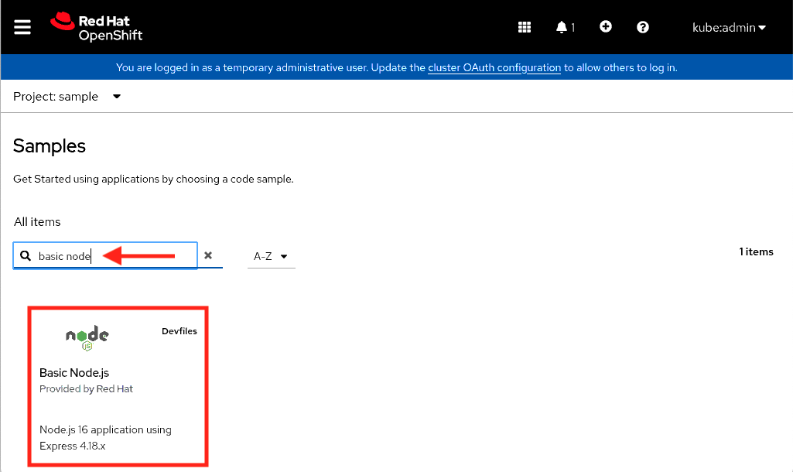 -
In
Basic Node.jsapplication building window, keep all options as is and click Create to create the application.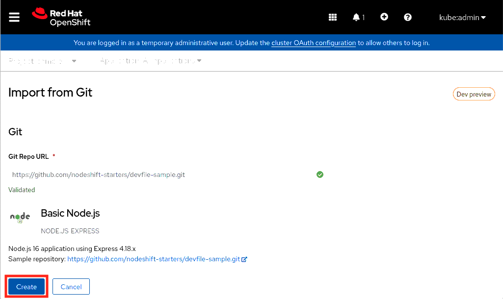 -
In topology view, you will see application is created.
Click on the circle to view application overview.
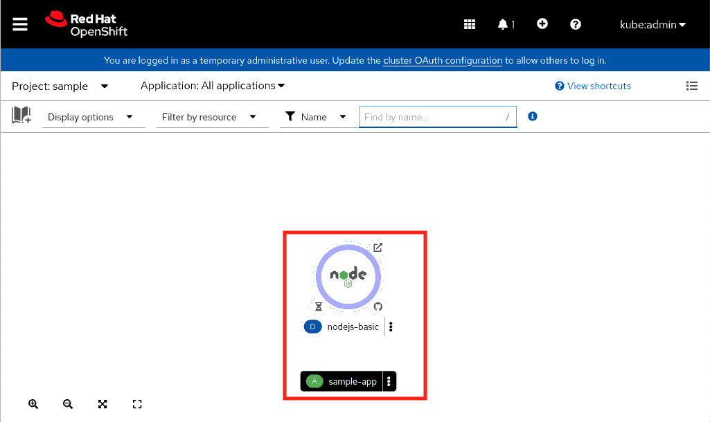 -
In resources tab, notice the application is building.
If you click the URL from routes section, it will open the application page in new tab.
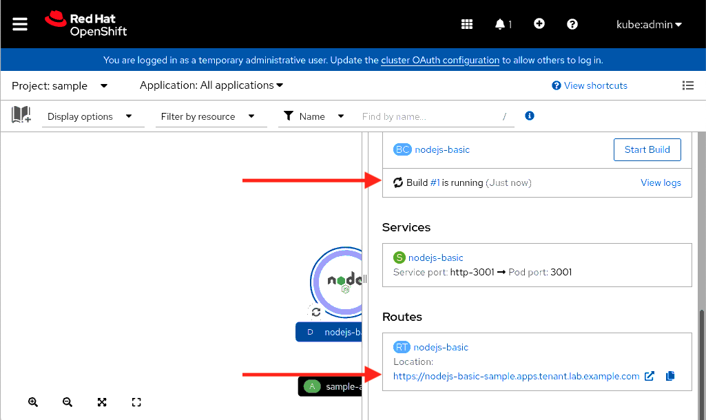 -
Click Advanced… to proceed.
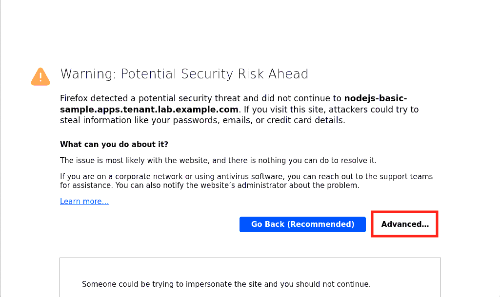 -
Click Accept the Risk and Continue to accept the risk and proceed.
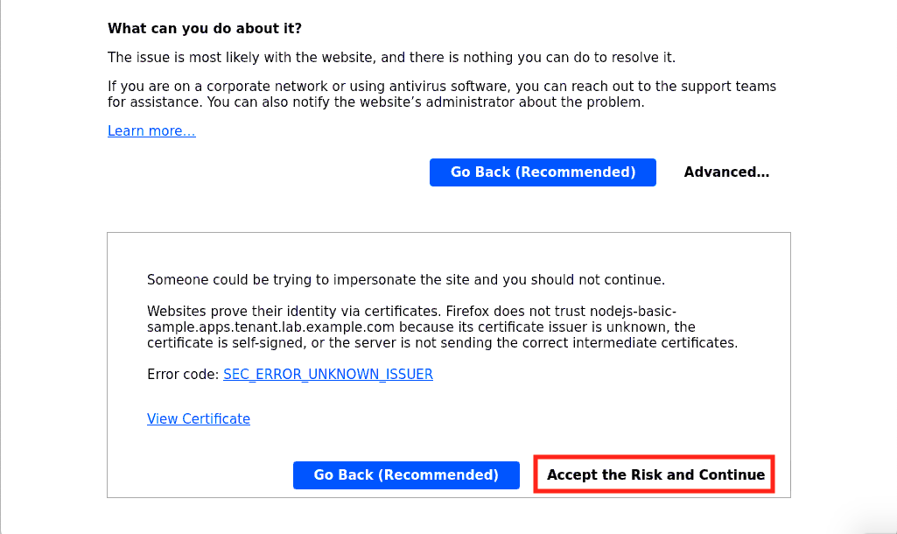 -
As application is still building stage, you will notice the message as Application is not available in page.
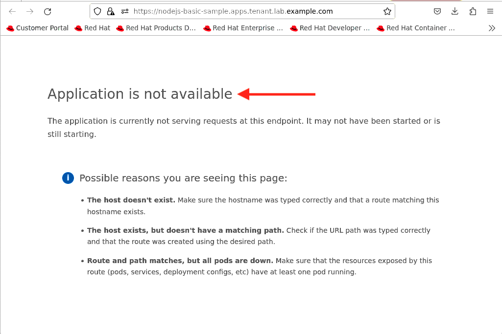 -
In a minute, you will notice the application is in running state.
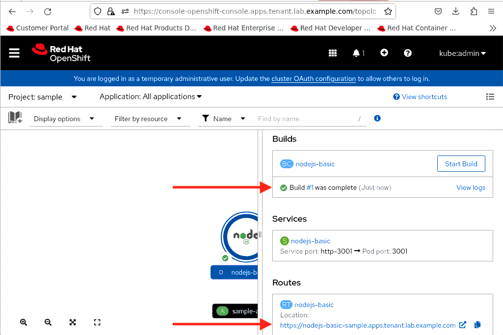 -
Refresh the application page to see the default page message.
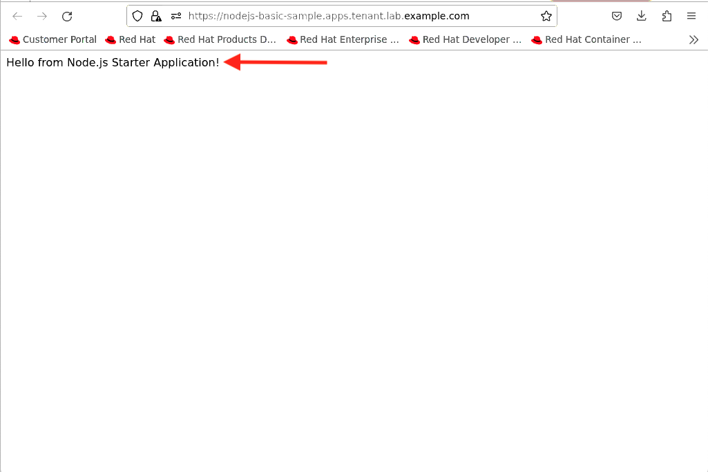
Test the High Availability and Resilience
-
Find out the where the application pod is running.
Sample output:[root@hypervisor ~]# oc get pods -n sample -o wide NAME READY STATUS RESTARTS AGE IP NODE NOMINATED NODE READINESS GATES nodejs-basic-1-build 0/1 Completed 0 2m51s 10.130.0.63 tcn2.lab.example.com <none> <none> nodejs-basic-6d55569c9c-gps2d 1/1 Running 0 2m51s 10.130.0.62 tcn2.lab.example.com <none> <none>
-
In this case, the application pod is running on the
tcn2.lab.example.comnode.This means
tcn2.lab.example.comnode is running onsno2Infrastructure cluster. -
To test high availability and resilience, shutdown the
sno2Infrastructure cluster and to do this you need to shutdown thesno2VM.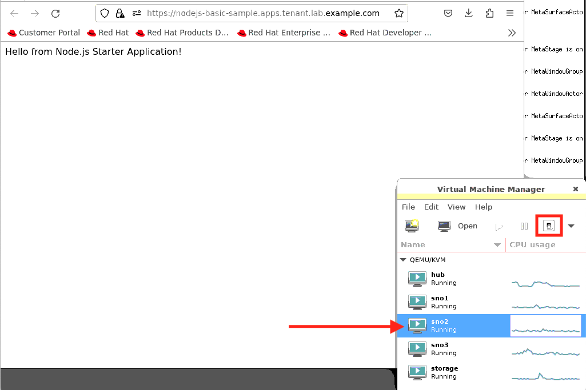Ensure
sno2VM is in shutoff state.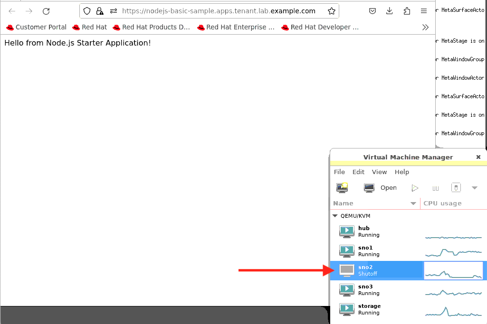 -
If you refresh the application page, you will notice failure message again.
-
The
pod-eviction-timeoutandnode-monitor-grace-periodparameters have the default value of5m and 40srespectively, which means by default, it takes5m40sto get pod eviction process triggered since the last status update from the node.After five minutes i.e. eviction timeout, you will notice the application is successfully migrated to
tcn1.lab.example.comnode.Sample output:[root@hypervisor ~]# oc get pods -n sample -o wide NAME READY STATUS RESTARTS AGE IP NODE NOMINATED NODE READINESS GATES nodejs-basic-6d55569c9c-gps2d 1/1 Terminating 0 23m 10.130.0.62 tcn2.lab.example.com <none> <none> nodejs-basic-6d55569c9c-tdkbm 1/1 Running 0 13m 10.128.1.115 tcn1.lab.example.com <none> <none>
Eviction timeout - How to modify the pod reschedule timeout in OpenShift 4? -
Refresh the application page again to view the default message again.
-
This test shows, even though one infrastructure node is down; application automatically migrate to other infrastructure node.